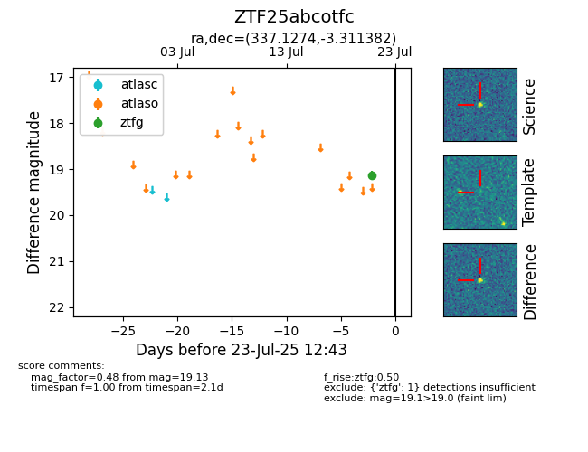

Target ZTF25abcotfc at 2025-07-23 12:43, see:
FINK: fink-portal.org/ZTF25abcotfc
Lasair: lasair-ztf.lsst.ac.uk/objects/ZTF25abcotfc
ALeRCE: alerce.online/object/ZTF25abcotfc
alt names
ZTF25abcotfc (ztf,fink)
coordinates:
equatorial (ra, dec) = (337.1274,-3.31138)
galactic (l, b) = (61.5508,-48.38172)
photometry
last ztfg=19.13
1 ztfg detections
